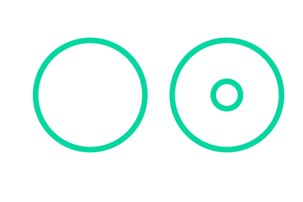
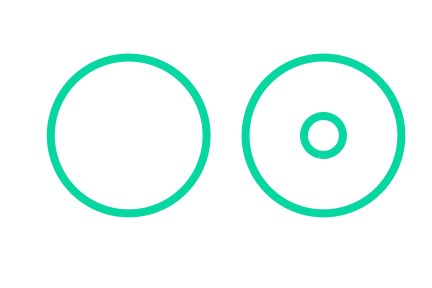
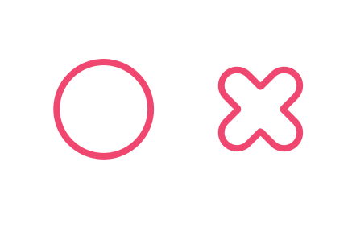
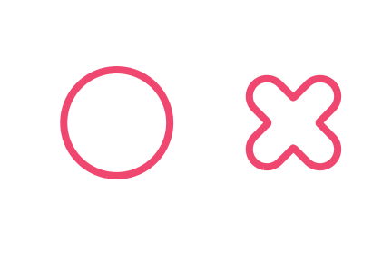

AI surveillance has certainly improved the safety of human society, nevertheless, it has
also posed significant challenges concerning the protection of personal privacy. Countless cameras serve as the eyes of AI, while deep
neural networks (DNNs) models function as its brain, and AI operates
incessantly. Without impairing the AI’s eyes, evading the recognition of
the AI’s brain is a feasible yet challenging solution to safeguarding privacy.
To this end, we present a dual-scene invisibility cloak for privacy
protection, enabling pedestrians to evade ubiquitous AI surveillance. Our
method is to perform physical adversarial attacks on pedestrian detectors
under daytime and nighttime conditions, while simultaneously consider
ing the attack’s effectiveness, stealthiness, and robustness. The proposed
invisibility cloak is coated with a custom-designed texture that disrupts
visible light imaging, while incorporating thermal control materials in
its interior to disrupt thermal infrared imaging. Extensive experiments
with commercial surveillance cameras on multiple detectors demonstrate
consistent and robust invisibility performance. Furthermore, we employ
state-of-the-art adversarial defense algorithms to analyze the counter
measures of the invisibility cloak, which reveal that no defense method
can withstand the cloak’s flexible and adaptive attacks. We anticipate
that our work will advance personal privacy protection in the age of AI.


 

 
